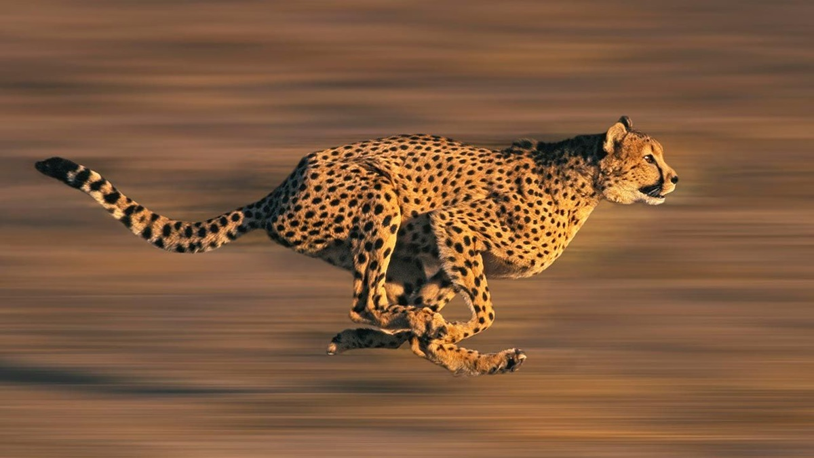

Guepardo
El guepardo, el animal terrestre más rapido del mundo, tiene infinidad de variedades. El más conocido es el guepardo de sudáfrica, ya que el guepardo real y el del sahara están en peligro de extinción.
Enlace Página María Rodríguez

El guepardo, el animal terrestre más rapido del mundo, tiene infinidad de variedades. El más conocido es el guepardo de sudáfrica, ya que el guepardo real y el del sahara están en peligro de extinción.